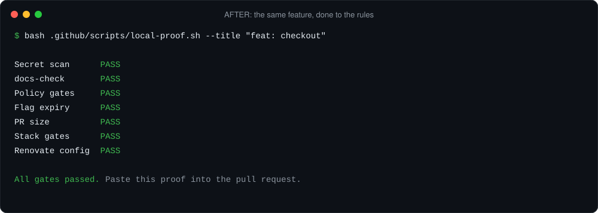

حواجز أمان للكود السريع، وللكود الذي يكتبه الذكاء الاصطناعي.
أمر واحد يضيف إلى أي مستودع ملف قواعد قصيرًا وبوابات آلية حقيقية. وكل طلب دمج يحمل إثباتًا أن الفحوص نجحت، على GitHub Actions أو على جهازك.
التثبيت في 60 ثانية
git clone https://github.com/mohamad-tn/engineering-rules.git
bash skills/engineering-rules-ar/scripts/install.sh --target ./my-project
bash .github/scripts/doctor.sh
bash .github/scripts/local-proof.shالمشكلة
كتابة الكود لم تكن يومًا أسرع، لكن مراجعته لم تتسارع. وهذه الأخطاء تمر:
أسرار مرفوعة
ملف .env أو مفتاح في تاريخ Git يحوّل تغيير المفتاح إلى حادثة.
إعدادات داخل الكود
العملة والمناطق الزمنية والمضيفات المكتوبة في الكود تحتاج إصدارًا لكل سوق جديد.
طلبات دمج ضخمة
1300 سطر معدّل لا يراجعها أحد جيدًا، فتمر الأخطاء معها.
وثائق كاذبة
يتغير الكود ولا تتغير الوثائق ولا سجل التغييرات.
بناء لا يمكن إعادة إنتاجه
لا ملف قفل، واعتمادات تجريبية، وبنيات تختلف بين الأجهزة.
أخضر بلا معنى
اختبارات متخطاة وبوابات لم تعمل بصمت.
كيف يعمل
1ثبّت
يكتشف تقنيتك ولا يكتب فوق أي ملف.
bash skills/engineering-rules-ar/scripts/install.sh --target ./my-project2اعمل بمهام صغيرة
طلب دمج واحد تقريبًا لكل مهمة، بحدود 400 سطر معدّل.
3أثبت
يشغّل كل بوابة ويطبع كتلة تلصقها في طلب الدمج.
bash .github/scripts/local-proof.sh4الإنسان يدمج
المساعدون لا يدمجون أبدًا. والبوابة التي لم تعمل ليست نجاحًا.
شاهده يعمل
الميزة نفسها، أولًا كطلب دمج سريع، ثم مكتوبة وفق القواعد. هذه المخرجات الحقيقية للعرض المرفق.


كل تقنية، تُكتشف تلقائيًا
التثبيت والتنسيق وفحص الكود والأنواع والاختبارات والبناء والتدقيق لكل تقنية، حتى المستودعات الكبيرة المتعددة المشاريع.
- Node.js
- Next.js
- React
- React Native
- Vue
- Angular
- Svelte
- NestJS
- .NET
- Laravel
- Symfony
- Flutter
- Python
- Django
- FastAPI
- Java
- Spring Boot
- Go
- Rust
- Ruby
- Rails
- Swift
- C / C++
- Terraform
- Docker
يعمل مع أي وكيل ذكاء اصطناعي
Claude Code وCursor وCodex وGitHub Copilot وGemini وWindsurf، أو مراجع بشري. القواعد في AGENTS.md، والمثبّت يضيف ملفات ربط صغيرة لكل أداة.
أسئلة
ما هو engineering-rules؟
ملف قواعد قصير ومجموعة بوابات آلية حقيقية لطلبات الدمج، مغلّفة كمهارة وكيل (Agent Skill) ومثبّت بأمر واحد. تعمل مع أي مستودع وأي تقنية.
هل أحتاج CI مدفوعًا؟
لا. كل بوابة سكربت bash أو Node عادي. شغّل local-proof.sh والصق مخرجاته في طلب الدمج، أو استدعِ السكربتات نفسها من GitHub Actions أو GitLab أو Bitbucket أو Jenkins.
هل يعمل مع مساعدي البرمجة بالذكاء الاصطناعي؟
نعم. Claude Code وCursor وCodex وCopilot وGemini وWindsurf تقرأ AGENTS.md أو ملفات الربط. ويستطيع الوكيل تبنّيه بأمر واحد وقراءة النتائج الآلية بالخيار --json.
ما اللغات والأطر المدعومة؟
Node.js وNext.js وReact وReact Native وExpo وVue وAngular وSvelte وNestJS و.NET وLaravel وPHP وFlutter وPython وDjango وJava وSpring وGo وRust وRuby وRails وSwift وC وC++ مع CMake وTerraform وOpenTofu وDocker.
هل أستطيع تبنّيه في مستودع قائم فوضوي؟
نعم. ابدأ بالنمط lite: لا يُفحص Markdown القديم، ويمكن فحص التاريخ من commit التبنّي، والبوابة التي تعطّلها عن قصد تخرج من قائمة المطلوب.
هل توجد نسخة عربية؟
نعم. نسخة عربية كاملة من المهارة وملف README والأدلة في المستودع نفسه.